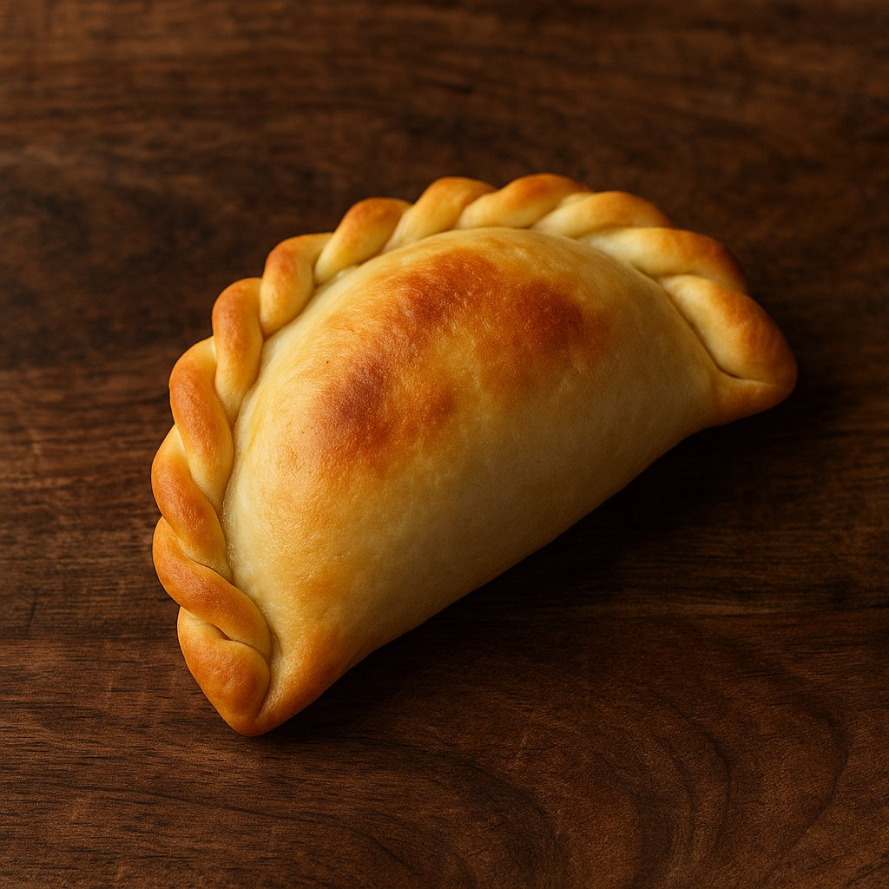

Empanada Salteña
La empanada salteña es un ícono del norte argentino, reconocida por su masa suave y su repulgue trenzado. Su interior suele estar compuesto por carne cortada a cuchillo, papa, huevo duro, ají molido y comino, aportando un sabor especiado y jugoso, típico de la región. Tradicionalmente cocida al horno de barro, esta empanada evoca la cocina criolla con cada bocado, y es un orgullo gastronómico de Salta.
Ingredientes
- Carne de res (cortada a cuchillo)
- Papa
- Cebolla
- Huevo duro
- Ají molido
- Comino
- Pimentón dulce
- Sal y pimienta
- Masa casera para empanadas